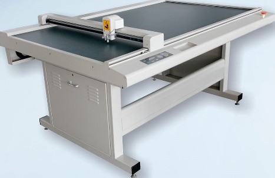
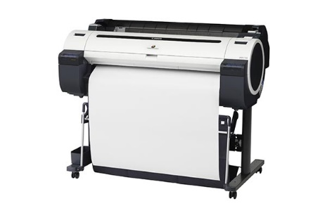
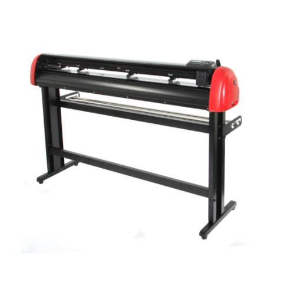

Plotterek
A plotter a számítógép által küldött képet vonalak formájában rajzolja ki a felhasználó által megadott felületre. Ezáltal a működése eltér a nyomtatókétól, mivel azok vonalak helyett kicsi pontokat visznek fel a papírra. A vonalakat valóban toll rajzolja, ami akár színes is lehet. A toll adott vastagsággal rendelkezik, tehát a felületek színezése csak satírozással lehetséges. A rajzgépek akár nagyobb felületekre is képes rajzolni, ezért főleg tervrajzok készítésére használják őket. A kirajzoltatni kívánt ábrát először rajzprogramban megtervezzük, majd a számítógépben megadjuk a koordinátákat a plotternek, hogy a papír melyik részére szeretnénk az ábrát megjeleníteni. Amint ezekkel a lépésékkel elkészültünk a számítógép elküldi a rajzgépnek az utasításokat.
Előnyei:
- Nagyon sok fajta felületre pontosan tudnak rajzolni (alumínium, műanyag, kartonpapír és akármilyen sima felületű fémre)
- Gyorsak
Hátrányai:
- Drágák
- Nagy helyet foglalnak
Főbb típusai
A plotterek különböznek méretben, sebességben és természetesen árban is.
Síkágyas plotter
Az e típusú plotternél a papírt egy nagy horizontális felszínnel rendelkező felületre helyezzük. A rajzoló kar oda vissza mozog a papír felett és megrajzolja a kívánt képet.
Dob plotter
A behelyezett papírt egy henger mozgassa vertikális dimenzióban előre és hátra. A tintatollakat tartó rajzoló kar pedig horizontálisan bal és jobb oldalirányú mozgást végez. Ezzel a módszerrel a vonalak bármely irányba meghúzhatóak.
Vágó plotter
Egyes gyártók, úgy hoznak létre vágó plottereket, hogy a rajzoló tollat késsél helyettesítik. A vágó plotter tartalmazhat nyomásszabályozó eszközt is, amely szabályozza, hogy a kés milyen erősen nyomja le az anyagot. Sok vágó plotter úgy működik, hogy a vágó kést mozgatja, az anyag pedig egyhelyben van rögzítve. A vágó plotterek sokféle cikk, például: egyedi feliratok, hirdetőtáblák és poszterek gyártásánál használatosak.
